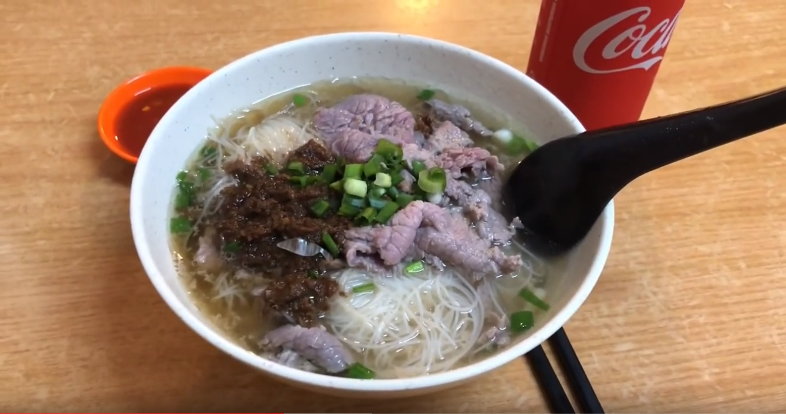
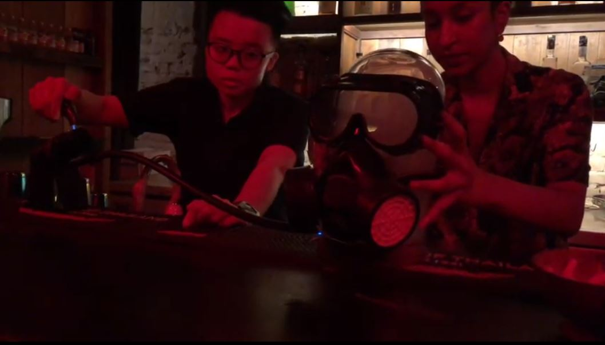

PLANS
Kuala Lumpur, Malaysia
쿠알라룸푸르 유명하고도 숨은 맛집 먹방여행
1 day- PLAN
- 현지인과 한국인이 인정한 맛집을 찾아가는 여행
-
타입
solo couple family friends
-
예상경비
$
-
난이도
normal
- 위치 easy
- 교통 easy
- 소통 normal
- 체력 hard
-
1
Crab Generation
와인크랩과 시리얼새우가 유명한 맛집
평범한 크랩요리가 아닌 화이트와인으로 만든 와인크랩요리맛집

 40min
9호선
40min
9호선Taman Connaught
→8→
WCTTSR Site2.40 MYR
-
2
Vintage 1988 Café
빈티지한 분위기와 와플이 맛있는 카페
20 MYR+ 6min
6min
-
3
Sin Kiew Yee Shin Kee Beef Noodles
현지 식당 분위기의 소고기 쌀국수 맛집
9 MYR+쌀국수를 간단히 먹은 뒤 근처 차이나타운과 센트럴마켓을 함께 둘러보기 좋다

16min
-
4
VCR
로이킴이 극찬한 소프트크랩버거 맛집
28 MYR+원나잇 푸드트립에서 로이킴이 방문했던 브런치카페 소프트크크랩이 들어간 이색버거로 핫플레이스인 곳
22min
잘란알로야시장과 부킷빈탕을 구경하며 파빌리온으로
-
5
Snowflake
카야토스트가 유명한 카페
12.90 MYR디저트로 먹기 좋은 두유로 만든 고소한 빙수
 25min
400번 버스
25min
400번 버스KL9 Wisma Boustead→4
→ BackHome0.5 MYR
-
6
Potions
쿠알라룸프 도시에서 가장 힙한 술집
나니아의 연대기가 떠오르는 옷장문을 열고 들어가면 펼쳐지는 다양하고 창의적인 술들의 파티
https://www.facebook.com/Potions-358998134882607/